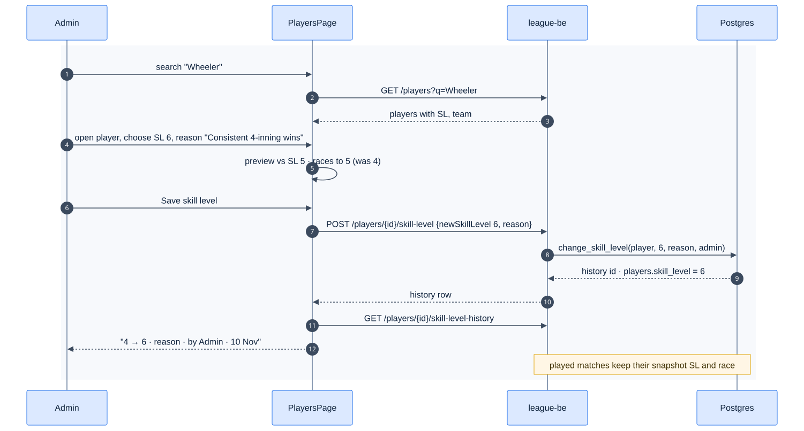
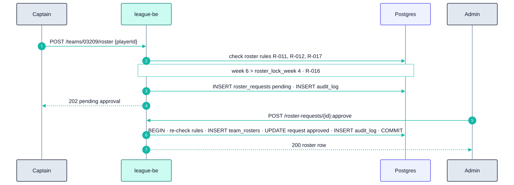
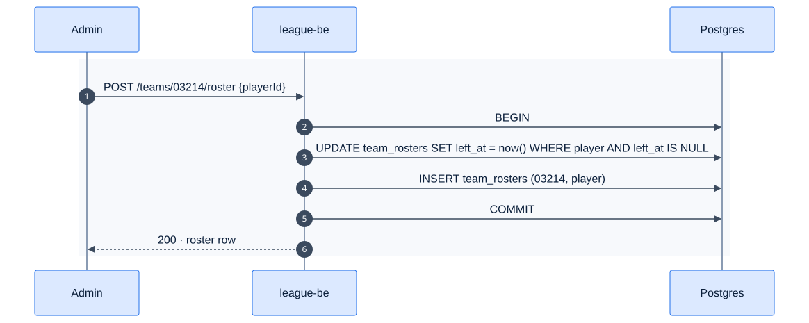
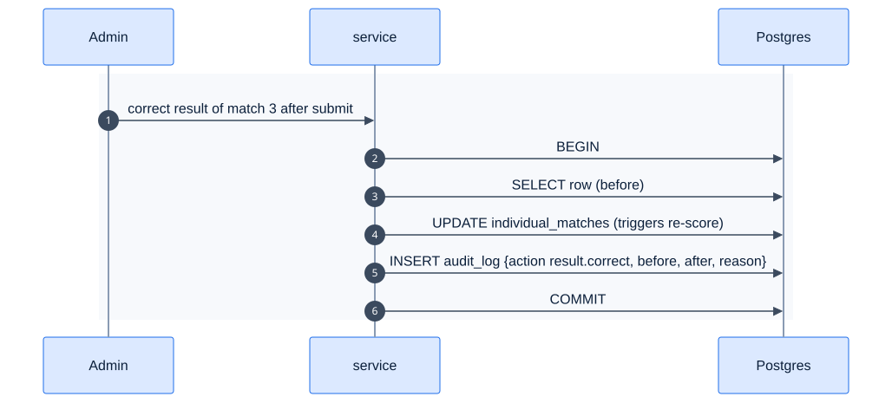

18 - Roster & Player Admin
Epic E05 · 6 features
Goal Captains keep rosters filled with paid members. Admins find players, change skill levels with a reason, and move players between teams, all traceable
Phase 1 (F16–F19) · 2 (F39c roster lock + one team per division, F41 audit log)
Status Parked Screens parked · Missing endpoints and change_skill_level() missing (E02)
Actors Captain, Admin
Related 04 §3, §10 · 06 B.1 · 11 §2
18.1 Features by phase18.1.1 Phase 118.1.2 Phase 218.2 Phase 1 deep dive18.2.1 Components
Open full screen 18.2.2 Main flow: admin changes a skill level
Open full screen 18.3 Phase 2 deep diveScope: F39c Roster lock and one team per division and F41 Audit log . Phase 1 lets admins and captains change rosters at any time. Phase 2 enforces the league bylaws (per-division membership, lock after week 4, no adds mid-night) and records every sensitive change.
18.3.1 Components: what Phase 2 adds
Open full screen 18.3.2 Key flow: a late roster add
Open full screen 18.3.3 Data delta
Change
Why
team_rosters.division_id + UNIQUE (player_id, division_id) WHERE left_at IS NULLReplaces the Phase 1 single-active-roster index
leagues.bylaws jsonb (roster_lock_week, allow_multi_division_same_night)Rules are configured, not hard-coded
New roster_requests (id, team_id, player_id, requested_by, status, decided_by, decided_at)
Late adds wait for approval
New audit_log (id, at, actor_user_id, action, entity, entity_id, before jsonb, after jsonb, reason) with no UPDATE or DELETE grant
Tamper-evident history (F41)
18.4 F16 — Add paid member to roster
Phase
Status
Rules
Repo refs
1
Parked R-014, R-017
_parked/src/components/league/AddPaidMemberSheet.tsx, RosterPanel.tsx · useAddRosterPlayer
18.4.1 RequirementsAs a captain, I add a paid member to my roster before the night starts.
ID
Requirement
FR-16.1
"Add paid member" appears on the captain's own roster panel only while the night isn't submitted. Admins always see it
FR-16.2
A drawer searches players (≥ 2 chars): SL, name, member ID, and an "Unpaid" flag
FR-16.3
Unpaid members stay visible but their Add button is disabled, so the refusal makes sense
FR-16.4
POST /teams/{teamId}/roster {playerId}. The server refuses unpaid players with 40003 "That member has not paid dues for this division yet."
FR-16.5
The server refuses a player who already has an active roster (F7 index) with 40001
FR-16.6
On success the drawer closes and the roster refetches
18.4.2 Logic
Open full screen 18.4.3 Edge cases
ID
Situation
Expected
EC-16.1
Member pays during the night
Admin flips is_paid; the captain retries
EC-16.2
Captain adds a player during match 3
Allowed in the MVP (the R-017 "before match 1" rule is Phase 2, F39c)
EC-16.3
Captain tries to poach a player from another team
400; only an admin can transfer
18.4.4 Acceptance criteria
AC-16.1 A player-role user doesn't see "Add paid member"; the captain does.AC-16.2 Adding a seeded unpaid player returns 40003 with the copy above.
18.4.5 Implementation gaps (_parked)
The button isn't hidden after the night is submitted.
18.5 F17 — Player search (admin)
Phase
Status
Repo refs
1
Parked _parked/src/pages/admin/PlayersPage.tsx · usePlayerSearch
18.5.1 Requirements
ID
Requirement
FR-17.1
/admin/players is behind RequireAdmin. Non-admins see the 40304 empty state. The server also refuses them
FR-17.2
Search input "Name or member ID" with a clear (X) button. The query runs at ≥ 2 trimmed chars, debounced 300 ms
FR-17.3
GET /players?q= matches full_name ILIKE or a member_id prefix. LIKE input is escaped (\ % _)
FR-17.4
Rows (≥ 56 px): SL square, name, member ID, team number or "No team". Tap → player drawer (F18, F19)
FR-17.5
States: under 2 chars "Type at least two characters." · no match "No players match that search." · loading skeleton · error banner
FR-17.6
Results are bounded (limit 50) with keyset paging (fix Q37 first)
FR-17.7
At ≥ 1024 px: a table (Name, Member ID, SL, Team, Points) with a 400 px side rail for the drawer
18.5.2 Acceptance criteria
AC-17.1 A partial name and a partial member ID both find the seeded player.AC-17.2 Searching 100% matches the literal text only.
18.5.3 Implementation gaps (_parked)
No debounce.
The desktop table layout isn't built.
The 403 copy uses the generic 40304 text instead of "You don't have permission to do that."
18.6 F18 — Skill-level change and history
Phase
Status
Rules
Repo refs
1
Parked R-050, R-120, R-125
_parked/src/components/league/SkillLevelPanel.tsx, lib/schemas.ts (skillLevelChangeSchema)
18.6.1 RequirementsAs an admin, I change a player's skill level with a reason, and anyone with access can see why it changed.
ID
Requirement
FR-18.1
Six toggle buttons, SL 2–7 (44 px, aria-pressed). The current level is accent; the pending choice is primary
FR-18.2
Preview: "vs SL 5: races to {now} (was {before})", shown only when the level changed
FR-18.3
Static note: "Applies from the next match. Played matches keep their snapshot."
FR-18.4
Reason is required (trimmed, ≥ 1 char): "Required. Shown in this player's history."
FR-18.5
Save is enabled only if valid and changed. Calls change_skill_level() via POST /players/{id}/skill-level
FR-18.6
History is append-only: "old → new", reason, "by {admin} · {date}". Empty: "No changes yet." With loading and error states
FR-18.7
After saving: invalidate the player list and history; reset the form
18.6.2 Logic
Open full screen 18.6.3 Edge cases
ID
Situation
Expected
EC-18.1
Player is put up but the opponent isn't yet (no snapshot)
The snapshot is taken when both sides are up, so the new SL applies. Acceptable; documented
EC-18.2
Two admins change the same player at once
Both succeed in order; history shows both
EC-18.3
9-Ball SL
Phase 2 (F32): per-format SL table
18.6.4 Acceptance criteria
AC-18.1 Save stays disabled for an empty or whitespace-only reason.AC-18.2 4 → 6 adds a history row "4 → 6" with the reason and the admin's name; played matches still show SL 4.AC-18.3 The preview for SL 6 vs SL 5 reads 5–4.
18.6.5 Implementation gaps (_parked)
The preview renders even when the level is unchanged.
History has no loading or error state.
18.7 F19 — Player transfer
Phase
Status
Rules
Repo refs
1
Parked R-020, FR-7.6
_parked/src/pages/admin/PlayersPage.tsx (transfer) · useTransferPlayer
18.7.1 Requirements
ID
Requirement
FR-19.1
In the player drawer, a select lists "No team" plus the teams of the player's division (not just the first division)
FR-19.2
"Transfer" calls POST /teams/{toTeamId}/roster {playerId} as admin. The server closes the old active row (left_at = now()) and opens the new one in one transaction
FR-19.3
"No team" closes the active row without opening a new one
FR-19.4
Success shows a toast "Moved to {team}"; the player list and rosters refetch
FR-19.5
Played matches keep the old team context (they reference the player, not the roster)
18.7.2 Flow
Open full screen 18.7.3 Acceptance criteria
AC-19.1 After a transfer, the player appears on the new roster for future nights, and past nights are unchanged.
18.7.4 Implementation gaps (_parked)
The team list is taken from the first division only.
No success feedback.
18.8 F39c — Roster lock and one team per division
Phase
Status
Rules
2
Target R-011, R-012, R-013, R-016, R-017, Q24 , Q32
18.8.1 Requirements
ID
Requirement
FR-39c.1
Replace the single-active-roster index with one active roster per division : UNIQUE (player_id, division_id) WHERE left_at IS NULL (denormalize division_id)
FR-39c.2
Same night, different divisions: allowed only if the league bylaw allow_multi_division_same_night is true
FR-39c.3
Roster changes after week 4 (roster_lock_week) need admin approval: the captain's add becomes a pending request
FR-39c.4
Captain adds during a night are allowed only before match 1 starts
18.8.2 Logic
Open full screen 18.8.3 Acceptance criteria
AC-39c.1 A player can be active on a Monday team and a Wednesday team, but not on two Wednesday teams in the same division.
18.9 F41 — Audit log
Phase
Status
Rules
2
Target 11 §5 , NFR-10
18.9.1 Requirements
ID
Requirement
FR-41.1
Table audit_log (id, actor_user_id, action, entity_type, entity_id, before jsonb, after jsonb, reason, ip, created_at). Append-only (no UPDATE/DELETE grants)
FR-41.2
Logged actions: SL change, roster add / transfer / remove, admin result correction, post-submit edits, dispute resolution, role grants, payment overrides
FR-41.3
Written in the same transaction as the change
FR-41.4
Admin UI: filter by entity, actor and date; show a before/after diff
FR-41.5
Retention 5 years (NFR-14)
18.9.2 Flow
Open full screen 18.9.3 Acceptance criteria
AC-41.1 Every privileged action in FR-41.2 produces exactly one audit row, with before and after values.